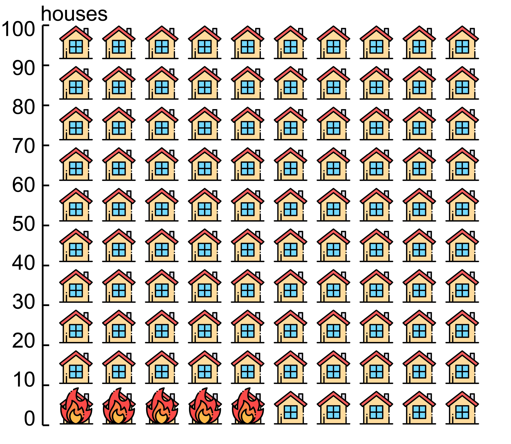
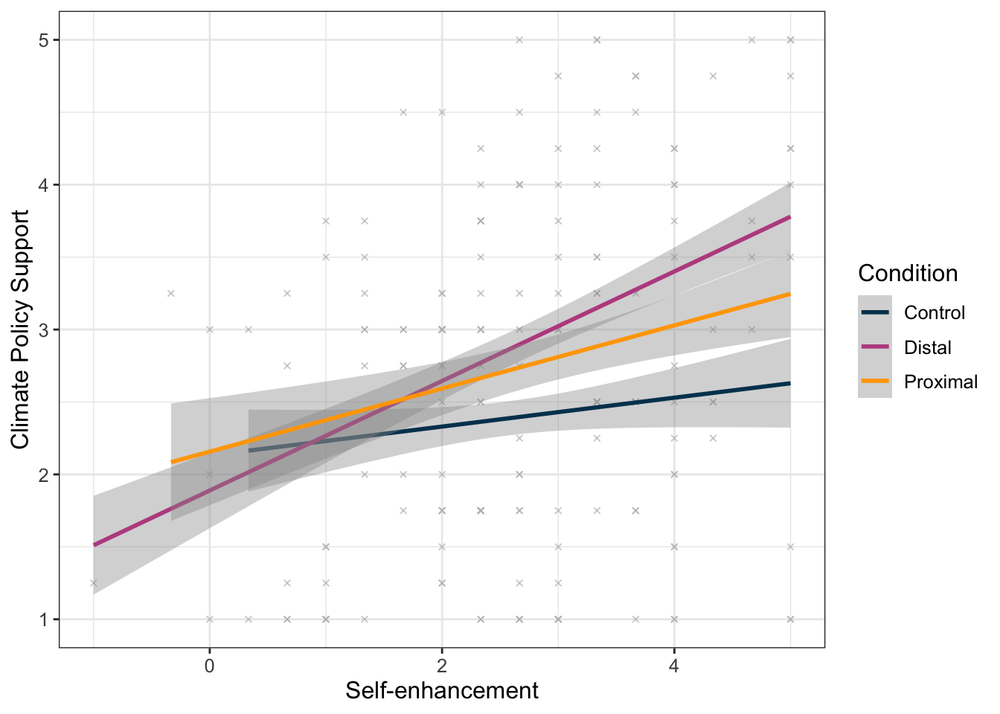

I enjoy photography and digital collage:
Wen Xu 徐闻 she/her
I am a second-year Computer Science Ph.D. student in the Khoury Data Visualization Lab at Northeastern University, advised by Dr. Lace Padilla. I obtained my B.A. in Psychology with a minor in Computer Science from Middlebury College.
My research interest lies broadly in cognition with data visualizations. I am particularly interested in understanding and mitigating cognitive biases in reasoning and decision-making with visualizations. I am also passionate about the intersection between visualization and pro-environmental and pro-social decision-making.
Selected Publications
Projects
Concrete Data Visualizations for Natural Disaster Risk Communication
Do more concrete forms of visualization bring risks closer?
Traditional forms of data visualizations abstract individual data points into aggregate geometric elements. This could distant the audience from what the data represent in the real world. Construal Level Theory (CLT) in psychology supports this notion by showing that concrete visual representations produce closer perceptions of distance in time and space.
In my undergraduate senior thesis project, I draw on CLT to investigate how we may utilize concrete data visualization designs to raise awareness of commonly overlooked natural disaster risks by making them feel closer and more certain.

Psychological Distance and Climate Engagement
When does bringing climate impacts closer motivate action and when does it backfire?
People tend to see climate change as influencing distant places in the far future. Would communicating local climate impacts reduce the distant perception and motivate climate support?
Recent research revealed that learning about local climate impacts can make certain groups of individuals less willing to take action. This study disentangles how one’s value orientations, such as being more egoistic versus altruistic, alter their reactions to proximal climate information.



Contact
wenxuxmn [at] gmail [dot] com